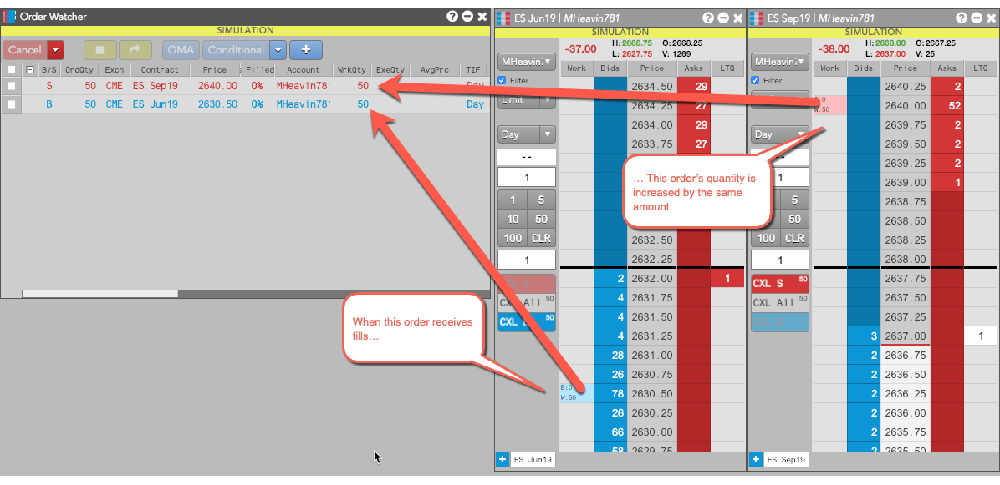

TT provides two public algos optimized for use with Order Watcher: Conditional and OCO 2.
The Conditional public algo lets you set one order as the trigger condition for working a second order. The algo submits the first order directly into the market and submits the second order on hold. As the first order receives fills, the algo automatically increments the quantity of the second order.
For example, suppose you submit a conditional algo with a 50-lot Buy entry order for the ES Jun19 contract and a 50-lot Sell exit order for the ES Sep19 contract, as shown below. When the ES Jun19 order receives a full or partial fill, the conditional algo increments the order quantity of the ES Sep19 order accordingly.

The OCO 2 public algo lets you select precisely two working orders and apply an OCO (one-cancels-other) OMA to them. When one order is fully-filled, the other order is canceled. Also, when partial fills are received for one order, the quantity of the other order is reduced accordingly. The OCO 2 public algo differs from the TT OCO OMA public algo in that it manages precisely two orders.